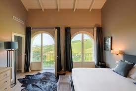
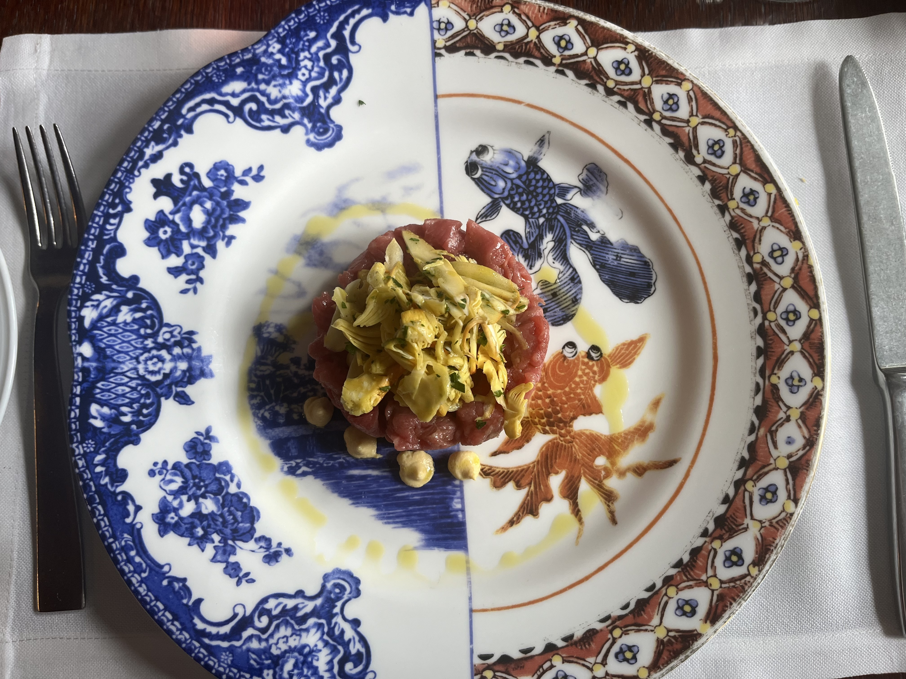
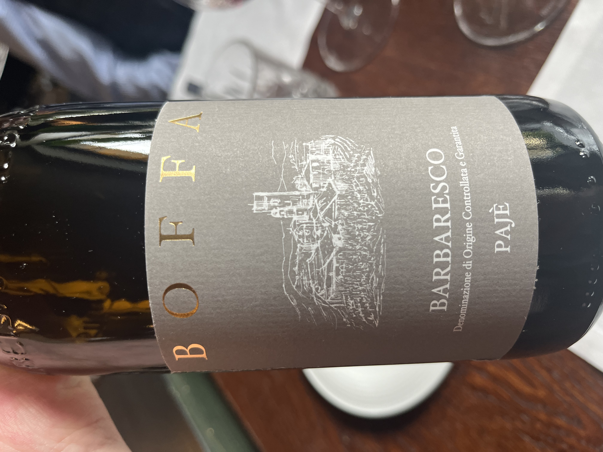
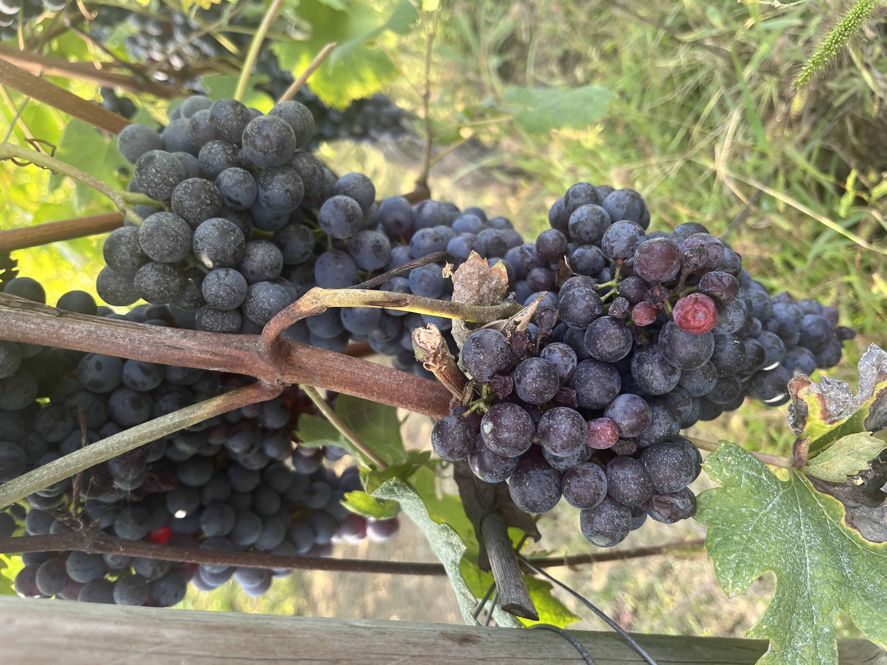
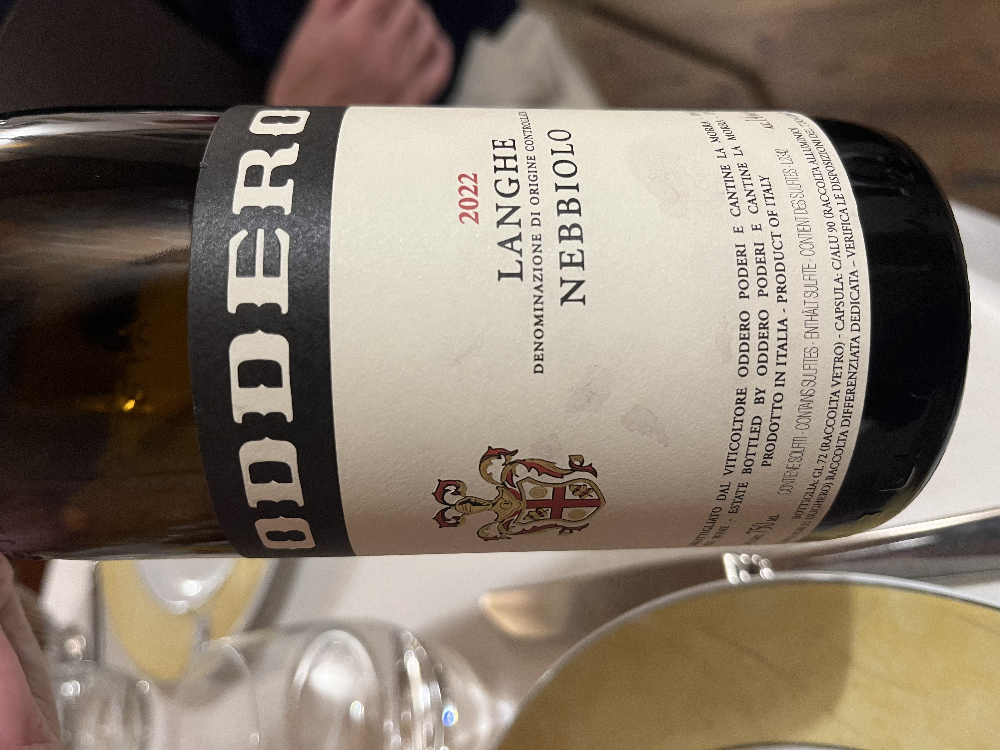

Accommodation
I Colli Rossi
We will all be staying at the excellent I Colli Rossi I Colli Rossi guest house. Set in six hectares of Barolo-producing vineyards just underneath the hill town of Monforte d'Alba, it is run by the ever-charming Bianca Giaccone.
Bianca provides a breakfast of local products every morning, along with a tour of the wine-making facilities and a tasting of all the I Colli Rossi wines.
The town is just 11 minutes on foot and has a number of bars and restaurants, as well as a weekly market selling local meat and cheese.
The bedrooms are spacious doubles with large separate bathrooms and a small balcony offering views across the whole of the Langhe, with the arc of the Alps stretching along the horizon on a clear day.
The Weekend Ahead
A few glimpses of the places, food, wine and views awaiting us in the Langhe.








Eating
The Main Lunch Celebration — Saturday
La Coccinella
Serravalle Langhe
A charming little Trattoria in the beautiful town of Serravalle offers fine food and excellent service in a convivial family atmosphere.
If the weather permits, a small digestive stroll in the town afterwards is sure to provide views of the Alps and surrounding countryside.
The young and the energetic will be afforded the opportunity to burn off some fat, wild and free, in this traffic-free hamlet.
Friday — Trip to Barbaresco
For those who fancy it, a walk in the town of Barbaresco and lunch at the excellent Osteria Campamac.
Also a chance to climb the famous Tower of Barbaresco, a medieval watchtower constructed in the 14th Century by the Visconti Family — and quite good for views of the town and hills.
Drinking
The rest of the programme is largely up to where the mood takes you. There are a couple of bars and cafés in the town of Monforte d'Alba within walking distance of the guest house.
The plan is to have a generous lunch most days and make do with a lighter evening meal at one of these spots — though those who wish to sample the delights of any of the 10 Michelin-starred restaurants in the vicinity will be more than welcome.
The guest house is set in six hectares of Nebbiolo vines in the shadow of Monforte d'Alba. There is a garden where you can sit outside and a winery where they make excellent Barolo and Nebbiolo wines.
Bianca will give us a tour of the wine-making facilities and a wine tasting for anyone interested in learning about I Colli Rossi wines.
Not Just Wine
What about if I don’t just want to sit about eating and drinking wine all the time?
A reasonable question.
Children and adults looking for more than just a steeping in some of the planet's finest red wines will find plenty to do for a short stay. There are castles open to visitors in Barolo and other towns nearby. There is the Toy Museum in Bra and the Museum of Magic in Cherasco.
Patato Friendly — Langhe with children
Then there are treks, walks and lots of little towns dotting the hillsides. It’s too early for skiing — but there might be a dusting of snow on the mountains.
Getting There & Away
There are two daily flights from Scotland to Turin, which is around an hour and 15 minutes' drive from the hotel.
Coming from Milan, it is approximately a two-hour drive.